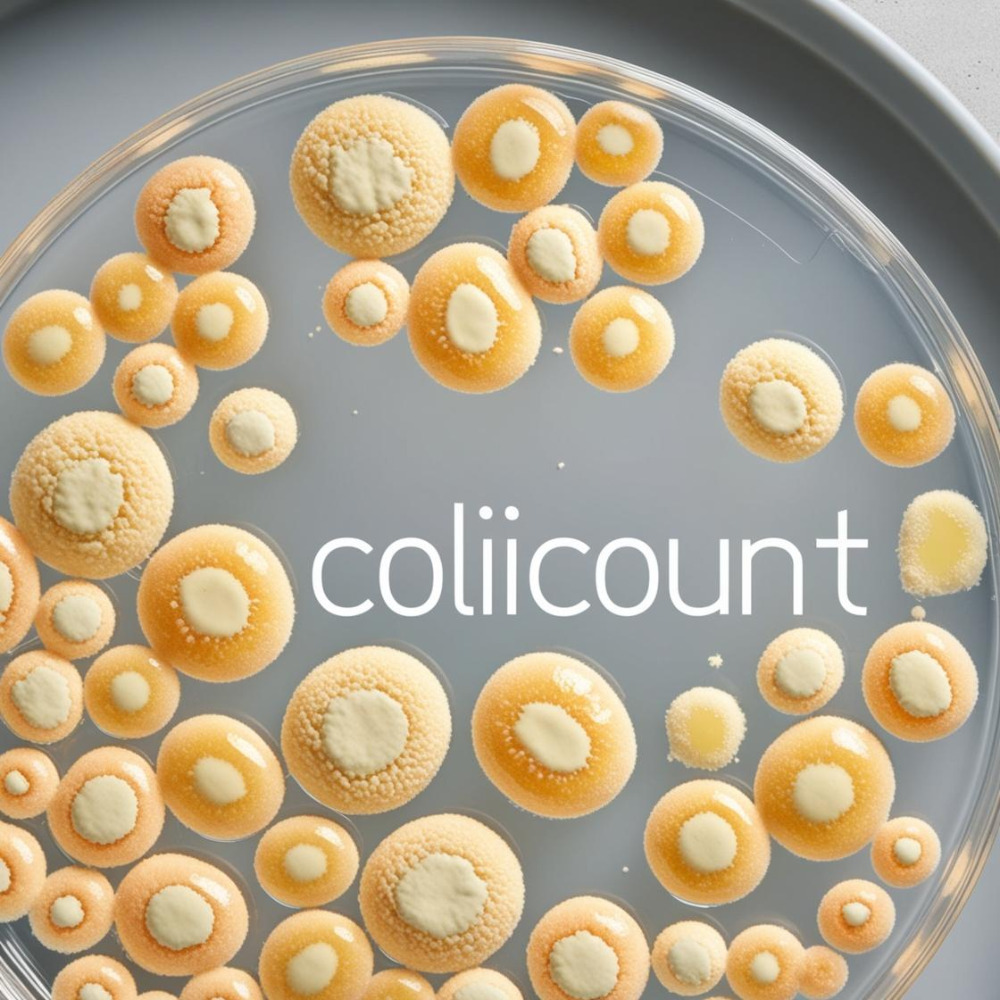

Analytics
Data Download
Future Plans
Analytics
-
Laboratory Data Processing:
streamline microbial colony analysis with a comprehensive
solution
-
Flexible Data Entry
- Manual input method
-
Automated counting via computer vision (OpenCV
integration)
-
Advanced Visualization:
interactive dashboard built with Plotly, enabling
real-time analysis of colony growth patterns

Data Download
-
Real Time Data Querying:
search functionality allows for user to search subset of
data by various environmental conditions or scientific
name.
-
Flexible Data Download:
once a subset of data is selected the user can download
the data conveniently to a csv file.
-
Research Insights:
provides researchers with valuable, data-driven
observations
Future Plans
-
Improved Computer Vision Accuracy:
train the existing OpenCV functionality on a dataset to
improve colony identification.
-
Improved Colony Resolution:
-
Confidence Measurement:
provide some metric for our tools confidence in the count
produced.
-
User Guided Selection of Colony:
allow user to select a colony on the plate and tailor
area/morphology inputs from that.